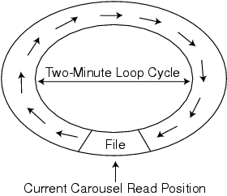

Figure 1: Carousels embed filesystems in multimedia content and the data within the filesystem is continuously repeated after a specific duration. Here the carousel loops every two minutes and the current carousel position enables the application to access the file. If you fail to completely read a file on one attempt, you must wait at least another two minutes to retrieve the portion of the file you missed earlier.
Back to Article